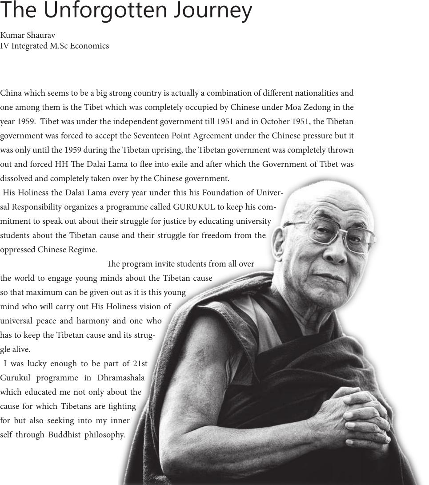

The Unforgotten Journey
Kumar Shaurav
IV Integrated M.Sc Economics
China which seems to be a big strong country is actually a combination of dierent nationalities and
one among them is the Tibet which was completely occupied by Chinese under Moa Zedong in the
year 1959. Tibet was under the independent government till 1951 and in October 1951, the Tibetan
government was forced to accept the Seventeen Point Agreement under the Chinese pressure but it
was only until the 1959 during the Tibetan uprising, the Tibetan government was completely thrown
out and forced HH e Dalai Lama to ee into exile and aer which the Government of Tibet was
dissolved and completely taken over by the Chinese government.
His Holiness the Dalai Lama every year under this his Foundation of Univer-
sal Responsibility organizes a programme called GURUKUL to keep his com-
mitment to speak out about their struggle for justice by educating university
students about the Tibetan cause and their struggle for freedom from the
oppressed Chinese Regime.
e program invite students from all over
the world to engage young minds about the Tibetan cause
so that maximum can be given out as it is this young
mind who will carry out His Holiness vision of
universal peace and harmony and one who
has to keep the Tibetan cause and its strug-
gle alive.
I was lucky enough to be part of 21st
Gurukul programme in Dhramashala
which educated me not only about the
cause for which Tibetans are ghting
for but also seeking into my inner
self through Buddhist philosophy.